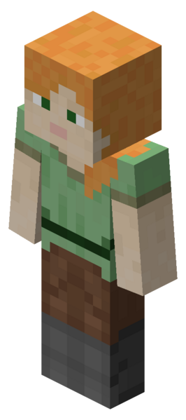

Игровой персонаж (англ. Player character) — персонаж, которым управляет человек во время игры в Minecraft. Два скина, использующиеся по умолчанию, известны как Стив
персонаж, которым управляет человек во время игры в Minecraft. Два скина, использующиеся по умолчанию - Алекс
В этой игре есть редактор персонажей
Персонажей можно разделить на 2 вида: мужские и женские. Тут уже персонажи разделяются на чернокожих и белокожих.